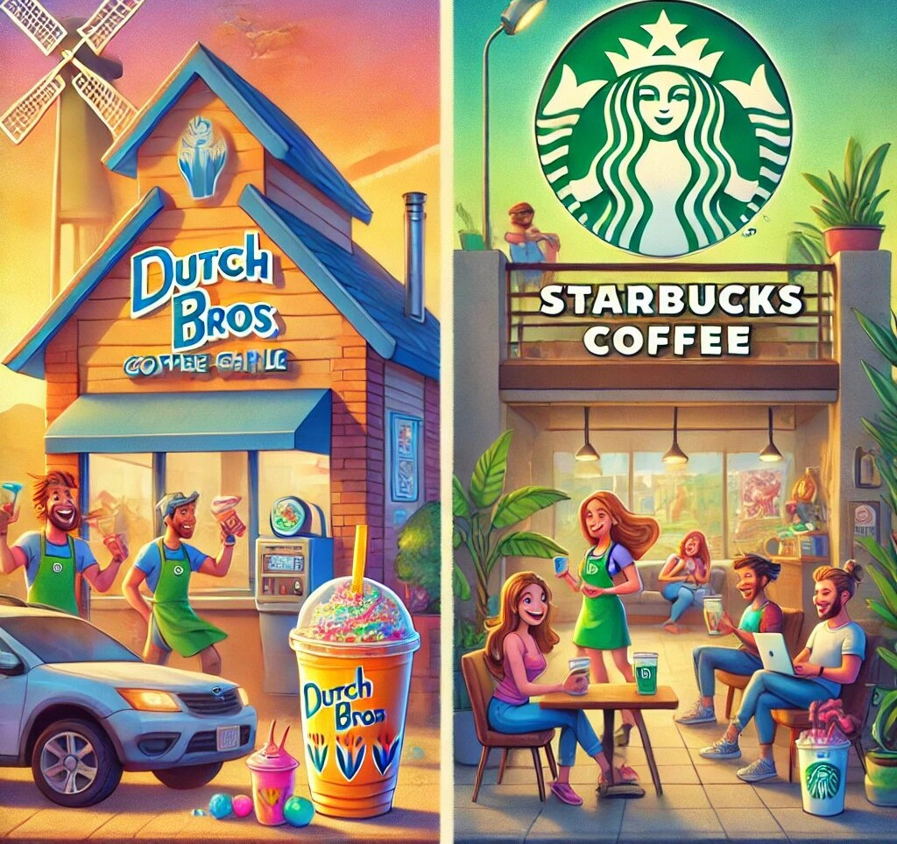

Dutch Bros vs Starbucks: A Straightforward Comparison
When it comes to coffee, people tend to have strong opinions. Two names that consistently pop up in debates are Dutch Bros and Starbucks. While both serve the same core purpose—keeping us caffeinated—they are worlds apart in many ways. Whether you’re a coffee connoisseur, a casual drinker, or just someone who needs a caffeine fix to survive Monday mornings, this comparison will give you a clear picture of what sets Dutch Bros and Starbucks apart.
The Coffee Culture
Dutch Bros: Dutch Bros is all about creating a fun, relaxed, and friendly environment. Founded in 1992 by two brothers in Grants Pass, Oregon, the company’s vibe reflects its small-town roots. Their slogan, “Make a difference, one cup at a time,” speaks to their mission of spreading positivity. Dutch Bros locations often feel like a party, with cheerful employees who seem genuinely excited to take your order.
Starbucks: Starbucks, on the other hand, leans toward a more polished, upscale coffee culture. With its beginnings in Seattle in 1971, Starbucks has become a global brand synonymous with coffee. Walking into a Starbucks often feels like stepping into a cozy library or a stylish café. Their goal is to provide a “third place” (not home, not work) where customers can relax and enjoy their coffee.
Menu Variety
Dutch Bros: If you love sweet, customizable drinks, Dutch Bros has your back. They offer a wide range of unique options, including blended drinks, energy-infused teas, and Italian sodas, all at reasonable Dutch Bros menu prices. Many of their drinks come with fun names like “Kicker,” “Annihilator,” and “Golden Eagle.” If you’re not a fan of coffee, Dutch Bros has plenty of alternatives, making it a great choice for anyone with a sweet tooth or adventurous taste buds.
Starbucks: Starbucks is the jack-of-all-trades when it comes to menu diversity. Alongside their extensive coffee menu, they offer teas, refreshers, frappuccinos, and even food items like sandwiches, pastries, and protein boxes. While Starbucks also allows customization, their menu leans more toward traditional coffee drinks and a broader range of options for different palates.
Customization and Sweetness
Dutch Bros: Dutch Bros takes customization to the next level. Want extra syrup? Done. Prefer your drink half-sweet? Easy. They’re known for their over-the-top sugary creations, so if you’re counting calories or sugar intake, you might need to tread carefully. However, if you’re in the mood for a drink that tastes like dessert, Dutch Bros is where it’s at.
Starbucks: Starbucks also offers a good amount of customization, but their approach is more balanced. You can adjust sweetness, milk type, and add extras like syrups or shots of espresso. While they have sweet options (hello, Caramel Macchiato!), their drinks don’t typically venture into dessert territory as often as Dutch Bros.
Basic Coffee Prices
Dutch Bros: Dutch Bros tends to have slightly lower prices for their standard coffee offerings. A regular drip coffee or Americano at Dutch Bros is often cheaper than its Starbucks counterpart. If you’re someone who likes to keep things simple, Dutch Bros prices may be the more budget-friendly choice for your daily caffeine fix.
Starbucks: Starbucks’ drip coffee and Americanos are slightly pricier, but many customers argue that the premium price comes with a premium experience. Starbucks positions itself as a more upscale brand, which reflects in its pricing.
The Drive-Thru Experience
Dutch Bros: The drive-thru is where Dutch Bros shines. It’s not just a coffee stop; it’s an experience. Their staff, often referred to as “broistas,” are known for their energy and friendly chatter. Don’t be surprised if they strike up a conversation about your day or your weekend plans. Some customers love this personal touch, while others might find it a bit overwhelming if they’re in a rush.
Starbucks: Starbucks drive-thrus are efficient and professional. They’re designed for speed and consistency, making them a reliable option when you’re short on time. While the staff is courteous, the interaction tends to be more formal and less chatty compared to Dutch Bros.
Locations and Accessibility
Dutch Bros: Dutch Bros is primarily located in the western United States, with most of their shops concentrated in states like Oregon, California, and Arizona. Their expansion is steady, but they’re still playing catch-up when it comes to national presence.
Starbucks: Starbucks, on the other hand, is everywhere. With over 35,000 locations worldwide, you’re never far from a Starbucks. Whether you’re in a bustling city or a small town, chances are there’s a green mermaid sign somewhere nearby.
Atmosphere
Dutch Bros: Dutch Bros locations are typically smaller and often focus on drive-thru or walk-up service. They don’t have much indoor seating, so it’s not the place to linger with your laptop or a book. However, what they lack in space, they make up for with a lively, upbeat vibe.
Starbucks: Starbucks is designed for sitting, working, and relaxing. With comfortable seating, free Wi-Fi, and soft background music, it’s the perfect spot for remote workers, students, or anyone who wants to take their time with a cup of coffee.
Final Thoughts
So, which is better Dutch Bros or Starbucks? It all comes down to personal preference. If you’re all about sugary, customizable drinks and a lively atmosphere, Dutch Bros is your go-to. But if you prefer a more sophisticated, laid-back coffee experience with plenty of seating and menu variety, Starbucks might be your pick.
Ultimately, both chains have their strengths and quirks, and there’s no reason you can’t enjoy the best of both worlds. After all, coffee isn’t just about the caffeine—it’s about the experience. And as long as you have a cup of your favorite brew in hand, you’re already winning.